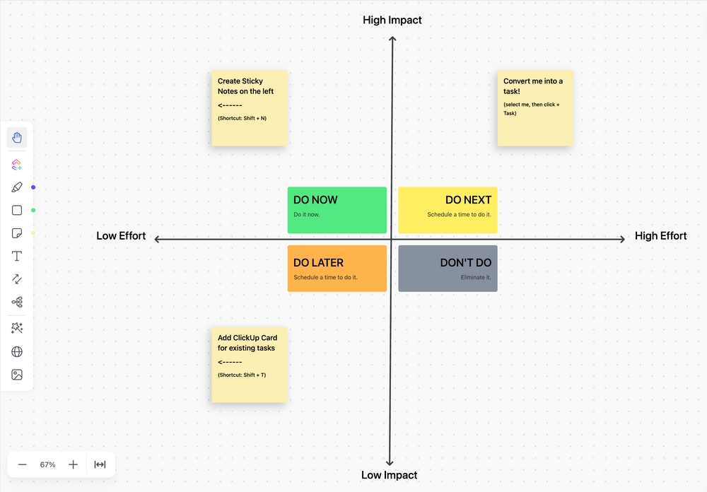

The idea of making consistent, regular, and incremental enhancements to work is everywhere. Toyota introduced Kaizen, Motorola created Six Sigma, and Agile engineering teams use continuous improvement. The overarching theme is constant improvement to prevent stagnation in your business. These improvements take myriad forms. It could be as simple as moving certain products to the impulse purchase counter at a supermarket or rearranging the entire assembly line to reduce waste. Either way, there is always room for improvement. You can create significant efficiencies by paying attention to your processes and optimizing them regularly. Read on and learn how to use process optimization concepts and methods to streamline your business operations.
Process optimization is the continuous activity of observing, understanding, improving, testing, and streamlining business processes toward maximizing desired business outcomes such as throughput, efficiency, productivity, profitability, or reducing cost/waste.
Depending on the process, scale, impact, steps involved, and business goals, there are various process optimization methods. Some of the most common types of process optimization are:
Some situations can be optimized quickly—identifying gaps and taking immediate steps to fix them. For instance, if a project manager finds some tasks missed, they might set up a checklist.
Some others need a more strategic approach. An engineering manager deploying dozens of microservices to the cloud might want to study the entire process carefully to understand interlocking steps and make holistic improvements.
Made popular by the Kaizen methodology, lean optimization focuses on reducing waste. This is often achieved with automation, collaboration, and streamlining workflows.
Seen in software engineering and development, it uses data and continuous monitoring to identify bottlenecks and inefficiencies.
This typically focuses on consistency, using data to identify defects and variations.
As one of the most commonly used steps in most process optimization programs, it involves visualizing and actively testing various versions of process improvements to identify the best one.
Irrespective of its kind, the foundational steps in designing effective process optimization remain constant. That’s what we discuss next.
Every process has the potential to be optimized. A good business analyst will know what to optimize and when. As a best practice, begin by asking the following questions to the project teams
These questions should give you a list of processes that need to be optimized. Once you have this, begin prioritizing. While doing so, consider three factors: effort involved, disruption expected, and potential outcomes.
If you’re just beginning to optimize business processes in the organization, you might want to prioritize those that need moderate effort, cause minimal disruption, and deliver medium to high outcomes.
ClickUp Impact Effort Matrix is designed to help you quickly and accurately evaluate the impact and cost so that you know what processes should have the highest priority.
If you have a mature workflow optimization program, you might choose business processes that require high effort and cause high disruption while delivering high outcomes. The risk of disruption might be worth considering the results it will deliver.
While performing the previous step, you might have understood the basics of what the process entails. Now, it’s time to analyze it more thoroughly.
List every step of the process in as much detail as possible. Speak to the project teams. If they collaborate with other departments, speak to them, too.
Note down every inadequacy/inefficiency in each step. For example, in an accounts payable process, uploading invoices to the ERP system might be taking too long, making it ripe for automation. In the marketing department,
some designs might be off-brand, requiring better quality control measures.
Ask why the process is the way it is. Often, operations teams change existing processes without clearly understanding the current process.
This can have disastrous effects on other parts of the process or other connected processes.
Once you’ve documented this analysis, map the processes visually. Include related processes to understand the entire landscape.
Use a to spread it over a period of time. This helps us see these processes clearly and lays them over various scenarios.

Gantt Chart view in ClickUp allows you to schedule tasks, keep up with project progress,
manage deadlines, and handle bottlenecks.
Think of various improvements you can make to the inefficient business processes. Ask the project team for suggestions—often, they know best what they need.
Take inspiration from other departments that might have already solved this problem. Explore all possible solutions.
A sound mind map is a great way to document all these ideas without fearing a blank page or constraints of rows and columns.
Discuss each in detail once you have a list of possible process optimizations. Identify the most likely to solve the problem and deliver the desired outcome while staying within the operational and budget constraints.
For example, if the problem is delays caused by the manual uploading of paper invoices to the ERP, the potential process improvement might be:
Before you implement the process improvements, test them on a smaller scale. You might do this by applying the changes to a small set of users or for a short period.
Monitor the user responses to the improvements. Measure the outcomes. Collect qualitative and quantitative feedback from all stakeholders to ensure your intentions are met.
If your test succeeds, implement it for the entire organization while preparing for change management.
Most importantly, monitor how each user is adopting the new process. Identify potential opportunities to optimize it further. Keep your inbox open to feedback.
An example of a Sales Process in an organisation
Minimizing inefficiencies:Most often, the most significant benefit of optimizing processes is that it eliminates inefficiencies. It reduces time, manual effort, loss of throughput, etc., to enable teams to do more with less.
Cost savings:Optimized processes minimize wastage and prevent productivity losses as part of the process. This saves costs for the organization.
For example, if a developer is waiting for six hours for a cloud environment to be provisioned, reducing that can save on productivity and compensation.
Improving quality: A robust process is the foundation of good quality output. Process optimization ensures all quality procedures are adhered to, improving the final product.
Fostering collaboration: While a process is typically a series of steps, many involve multiple people or teams working together.
An optimized process needs seamless knowledge-sharing and hand-offs between them. Continuous process optimization enables this, fostering stronger collaboration.
Mitigating risks: The often ignored benefit of process optimization is its ability to reduce risks significantly. In financial services, a well-optimized process can prevent fraud.
In healthcare, it can save lives. In software, it can minimize security breaches and strengthen privacy, confidentiality, security, and compliance postures.
An operational intervention that can deliver such exceptional benefits does not come without challenges. Let’s explore what you will likely encounter in your process optimization journey and how to overcome them.
Limited view of the process: Often, people jump to make changes to processes they deem inefficient. So, they make changes without understanding their impact on the people, process, and connected workflows. Imagine moving the cafeteria to the terrace to save on lighting without considering the fact that it doesn’t have wheelchair access. Such changes can have counterproductive consequences. Process complexity: Not all processes are simple and sequential. Therefore, changing one step might make the rest of the complex processes collapse like a stack of cards. Resistance to change: People often resist change, even if they don’t outright reject it. They might subconsciously continue to follow the old process, causing inefficiencies for themselves and others.
Insufficient ROI: Most process optimization programs look for a return on investment through increased sales, productivity, speed, etc. The business processes that can’t make such returns apparent might get ignored, losing out on significant opportunities. Lack of leadership buy-in: Small, incremental changes are often outside the radar of business leadership. This makes such process optimizations more challenging to implement and enforce.We live in a world of tool overload. There are dozens of tools for collaboration, project management, communication, and so on. Leverage the right tool stack to improve the outcomes of your process optimization efforts.
.gif)
Boost productivity with collaborative task management by assigning tasks, tagging comments, and sharing screen recordings in one platform
Data collection is not a one-time activity. Therefore, you need a systematic approach from multiple perspectives to make your data collection effective.
Run surveys to understand the team’s concerns with the process you’re looking to optimize
Use a time tracker to measure how long each step in the process takes. The ClickUp time tracker is an excellent tool to do this. You can start/stop the timer or manually add the time spent. You can do this anywhere—mobile, browser, or native apps.
Look at completed project archives to learn more about how the tasks are performed. Go through comments and checklists to analyze current processes.
No process can be optimized successfully without collaboration, be it while collecting data, brainstorming ideas, implementing the change, or measuring results. Do this right with modern collaboration tools.
Use ClickUp Nodepadto take notes and share them with the team. What’s more? Use the AI tools to proofread and summarize them as well.

Thread Summarization in ClickUp AI
Use tools like the ClickUp Whiteboardsto visualize business processes. Drag and drop steps, add dependencies, and make it visible for everyone to comment. This creates comprehensive visibility, bringing everyone on the same board!
You can also use ClickUp Mind Maps to simulate potential improvements and let teams annotate too.
Debate ideas. Propose changes on a document, like ClickUp Docs, inviting team members to review and offer feedback. Use the comments feature to debate any improvements you suggest, exploring the pros and cons asynchronously.
Challenges around resistance to change and leadership buy-in can be addressed with better planning, presentation, and communication. We’ve got tools for that! Use the ClickUp Gantt Chart View visualize the process over time. Create before and after views to show the difference process optimization makes. This will help teams imagine the potential upside to accepting the change. Streamline connected processes with ClickUp Dependencies. Link related tasks, customers, orders, deals, users, bug reports, documents, etc. View all relationships and dependencies in one place to make the right decisions. Use ClickUp Automations to do the busy work. Automatically change assignees, priorities, apply tags to accelerate the process optimization program. Trigger tasks based on any action or condition. ClickUp is the only productivity platform that brings all your work in one place. With the power of various built-in features designed to give you control over your processes, it’s the best place to begin your process optimization project.
Erica
 Max 9min read
Max 9min read
Max 9min read
Erica
Max 9min read

 Free training& 24-hour support
Free training& 24-hour support Serious about security & prevacy
Serious about security & prevacy